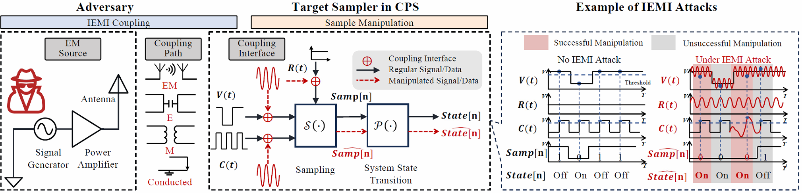

Research Overview
This website presents a structured, searchable view of intentional electromagnetic interference (IEMI) research for cyber-physical systems (CPS), with practical emphasis on attack surfaces, target samplers, coupling paths, and defense implications.
80+ Curated Studies
Cross-domain coverage spanning smart IoT, autonomous driving, medical systems, and critical infrastructure.
Model-Driven Lens
Unified analysis of IEMI coupling and sample manipulation to compare attacks beyond device-specific demonstrations.
Actionable Filtering
Explore papers by application, target system, target sampler, and publication year for rapid literature review.
Abstract
Falsifying electrical signals in computer systems—the gateway between the physical and digital worlds—intentional electromagnetic interference (IEMI) attacks have become increasingly pervasive and damaging to cyber-physical systems due to their ability to disrupt or control a wide range of safety- and security-critical applications. Existing studies of IEMI attacks are often highly device-specific and exploit disparate, insufficiently compared attack vectors. The absence of a unified, model-based understanding of IEMI vulnerabilities hinders both transferable security assessments and effective cross-disciplinary collaboration toward deployable protections. To address this gap, this work analyzes over 80 instances of IEMI attacks and defenses to provide an analytical framework that models how adversaries achieve IEMI coupling and sample manipulation to inject malicious electromagnetic energy that alters hardware behavior and impacts software execution. The primary goal is to move the field beyond exhaustive empirical discovery of vulnerable instances and toward in-depth theoretical analysis and proactive defense strategies applicable to both existing and future cyber-physical systems. In addition to identifying gaps in current IEMI attack and defense research, this work outlines important directions for future work tailored to the needs and roles of different stakeholder communities.
IEMI Research Database
Filter and explore papers by application, target system, or target sampler. Submit new data to expand the dataset, or report errors for corrections.
Motivation
Electromagnetic interference has long been a concern in system design, but the growing threat of IEMI attacks against interconnected cyber-physical systems has made this issue increasingly urgent. We identify several key gaps that motivate this systematization.
Inherent Vulnerability
Fundamental electromagnetic principles render modern electronic circuits inherently susceptible to EMI, making most cyber-physical systems theoretically vulnerable to IEMI attacks. However, the factors that determine why some targets are more easily exploitable than others remain poorly understood.
Energy-Security Trade-off
The push toward low-power and energy-efficient designs, central to mobile and IoT systems, increases susceptibility to IEMI by reducing operating voltages and noise margins. How to effectively protect future ultra-low-power and highly miniaturized electronics remains an open challenge.
Evolving Threat Landscape
Reported and suspected IEMI attacks have grown rapidly in recent years, driven by the widespread deployment of vulnerable devices and the availability of low-cost, portable IEMI equipment. This trend is especially concerning for critical cyber-physical infrastructure, such as autonomous vehicles, industrial automation, and medical systems. Moreover, attacks are shifting from coarse disruption to more precise EMFI and EMSI techniques, highlighting the need for systematic characterization of feasible targets and attack impacts.
Imbalanced Attack/Defense Efforts
IEMI attacks are often significantly easier and cheaper to execute than to defend against, particularly at the physical layer. Defenders must protect complex systems against a broad and evolving attack surface while preserving functionality, leading to a research landscape dominated by attack demonstrations. A key missing piece is effective modeling of IEMI attacks to enable systematic defense design and evaluation.
IEMI Problem Formulation
This section introduces the model underpinning our systematization of IEMI attacks and defenses. The IEMI attack process against a hardware target sampler and its surrounding system is modeled as the combination of IEMI coupling, which establishes a physical channel for malicious signal delivery, and sample manipulation, which translates attacker intent and target behavior into adversarial IEMI waveform designs. The model is deliberately kept simple while preserving generality and precision and serves as the foundation for our subsequent literature analysis.
Target Sampler and System
A target sampler is a hardware entity that discretizes analog electrical signals. As the gateway between the physical world and the cyber world, samplers are essential to all modern computer systems. The susceptibility of target samplers to electromagnetic interference is a fundamental cause of IEMI attacks.
A target sampler \(\mathcal{S}[\cdot]\) converts an input signal \(V(t)\) that the sampler intends to measure into discrete data samples. This process is orchestrated by a clock signal \(C(t)\) which sets the sampling rate, and a reference signal \(R(t)\) which provides a reference for the measurement. The acquired sample \(\text{Samp}[n]\) at time \(t\) is:
A target system is a software-hardware entity whose behavior depends on the output of the target sampler, modeled as a finite-state machine. A function \(\mathcal{P}[\cdot]\) represents the state transitions, which maps the current input and the previous state to the next state. The current state can then be formulated recursively as:
In an end-to-end IEMI attack, the adversary causes changes in at least one of V(t), C(t), or R(t) to modify \(\text{Samp}[n]\) to be an erroneous value, \(\widehat{\text{Samp}}[n]\), forcing the state machine to enter an insecure state \(\widehat{\text{State}[n]}\).
IEMI Coupling
IEMI Coupling is the process of delivering electromagnetic energy generated on the adversary's end to targets to induce analog voltages that change target sampler inputs. The fundamental mechanisms for changing \(V(t)\), \(C(t)\), \(R(t)\) are the same. Hence, we use the example of changing \(V(t)\), where the input voltage signal under IEMI attacks is:
\(V_{\mathrm{true}}(t)\) is the authentic electrical voltage on the input without IEMI. The attacker-induced malicious voltage is modeled by \(V_{\mathrm{adv}}(t)\)—the IEMI source signal sent from the adversary's antenna—subjected to the transfer function \(\mathcal{T}(\cdot)\) of the IEMI coupling process.
The function \(\mathcal{T}(\cdot)\) is characterized by its frequency response to the EM energy generation by the adversary and embodies the impact of several target-specific factors, such as the distance and angle between the adversary and the target, the casing material of the target hardware, and other environmental factors. As shown in Figure 2, the coupling mechanism demonstrates how adversarial EM signals propagate and couple with the target system:

Figure 2: IEMI Coupling Sample: Physical channels for electromagnetic energy delivery to target samplers
Sample Manipulation
Sample Manipulation is the process of designing the IEMI's time-varying waveform based on the malicious voltages that the adversary wants the target samplers to receive, which would result in manipulated data in the software space. This consists of (1) reverse engineering the working principle of the target system to map desired state transitions to required samples, i.e., state-sample mapping, (2) applying timing controls to align the induced IEMI signals with internal timing of the target, and (3) applying amplitude controls to trick the target sampler into perceiving desired values.
Specifically, reverse engineering on Equations (1) and (2) enables the adversary to find a state-sample mapping function \(\mathcal{R}(\cdot)\) that predicts a viable sequence of required samples:
Furthermore, the IEMI signal that an adversary needs to generate in Equation (3) can be modeled as a baseband signal \(b(t)\) modulated onto a carrier signal, i.e.,
where \(\mathrm{modul}[\cdot]\) performs modulation, \(\varphi(t)\) and \(A_i(t)\) are adjustable phases and amplitudes for timing and amplitude control, and \(f_i\) represents the frequency of a single sinusoidal component with \(\{i\}\) indexing the set of all carrier frequency components. In practice, the IEMI signal's amplitude and frequency ranges are constrained by the maximum output power and frequency of the EM modulation and generation device, denoted as \(V_{\mathrm{lim}}\) and \(f_{\mathrm{lim}}\), respectively.
IEMI Threat Models
Factors of common IEMI threat models can be mapped to the parameters in \(\mathcal{T}(\cdot)\), \(\mathcal{S}[\cdot]\), and \(\mathcal{P}[\cdot]\). Physical deployment conditions that affect coupling feasibility can be abstracted into the coupling channels characterized by \(\mathcal{T}(\cdot)\). For example, metal enclosures and better grounding generally result in lower transfer efficiencies compared to plastic devices without proper grounding, increasing attack difficulties.
The target's operating state during injection maps to the clock and sampling process, where \(C(t)\) determines the sampling edges, and implementation-specific decision thresholds can be represented by extending \(\mathcal{S}[\cdot]\) with additional threshold parameters when needed. Finally, an attacker's knowledge of target timing corresponds to what the attacker can infer about the target's internal sampling schedule and state transition schemes.
Key Observations
Key Observation 1
Most existing IEMI attacks still demonstrate physical access or proximity to targets. This constraint mostly arises from their proof-of-concept research scope.
Open Question: Despite the prevailing belief that employing advanced amplifiers and antennas can increase attack distance, how practical is this assumption, and how can researchers and manufacturers validate it?
Key Observation 2
A wide variety of sampler structures, each deployable on different CPS devices, have been targeted. The main factors influencing the choice of targets include their accessibility, whether they are mobile or stationary, and the magnitude of their safety impact.
Open Question: How can target sampler susceptibility observed in easy-to-access systems be extrapolated to hard-to-access or even unseen systems for IEMI threat prediction?
Key Observation 3
Empirical device-dependent testing of the effectiveness of different electromagnetic waveforms and frequencies dominates the current research landscape.
Open Question: How challenging and beneficial would it be to pursue more rigorous quantitative characterization that builds upon modeling and simulation of the target system's electrical resonance characteristics?
Key Observation 4
Achieving absolute timing control that accurately aligns IEMI with system internal timing to achieve controlling attacks is challenging and relatively rare in existing works.
Open Question: How can IEMI attacks be more integrated with EM side-channel attack methodologies to design advanced feedback control loops for precise timing control?
Key Observation 5
Little work demonstrated how to use IEMI to precisely change voltages in non-physical access threat models due to the lack of voltage information feedback channels.
Open Question: What strategies could exist to non-invasively probe the internal voltages of target sampler inputs, especially against moving targets?
Key Observation 6
Hardware-based defenses, while extensively discussed, face significant engineering trade-offs. This results in a lack of experimental validation for most proposed defenses due to the challenges of hardware manufacturing.
Open Question: How can security researchers quantitatively evaluate the trade-offs and possibly validate the strategies on potential simulation platforms?
Key Observation 7
Existing defenses often focus on system-specific countermeasures that detect or downgrade attacks. There is a need for proactive strategies that can prevent sample manipulation from occurring in the first place.
Open Question: How can we design proactive strategies for preventing sample manipulation and make the defenses applicable across different devices and applications?
Authors


Resources
The four resource links are shown in the header next to USENIX Security 2026 for quicker access.
FAQ for Researchers
What is the IEMI Research Database used for?
It supports rapid literature discovery and comparative analysis for intentional electromagnetic interference attacks, with structured fields for targets, coupling paths, signal assumptions, and attack objectives.
Which domains are covered in this CPS security dataset?
The dataset includes smart IoT, autonomous driving, medical healthcare, industrial automation, power systems, EV charging, and serial communication systems.
How can I contribute new IEMI papers or corrections?
Use the Submit and Report buttons in the database section to share newly published papers, metadata corrections, or taxonomy updates.
Citation
If you use this work, please cite:
Acknowledgments
We thank USENIX Security 2026 for acceptance and all contributors and reviewers for their valuable feedback.
Special thanks to:
- Partner institutions for support
- Experiment participants
- Funding agencies